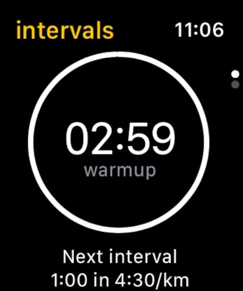
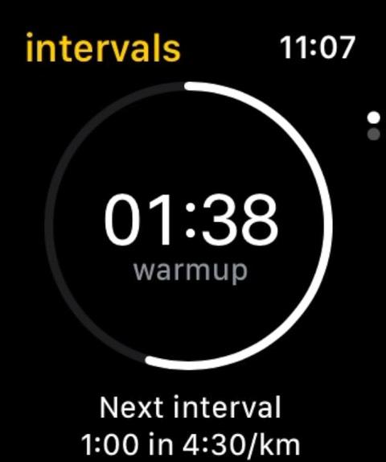
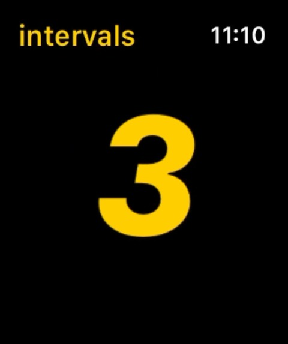
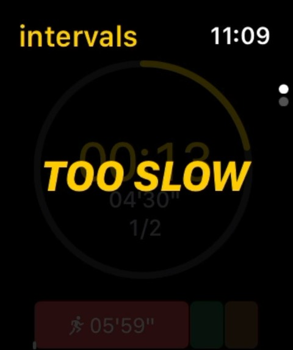
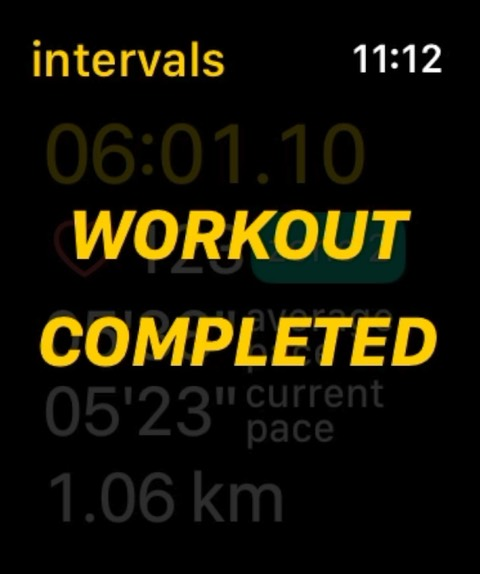

Voice Cues — what the watch says, and when
Spoken cues tell a runner what comes next, so they don't have to look at their wrist. My co-founder built the speech engine, and I tuned the words, the timing and the sound on real runs.
Overview
On an interval run the watch shows what to do and taps the wrist at every change, but a runner with music in their ears still has to look down to find out what comes next. Voice Cues say it out loud instead: the next interval, how long it is and the target to hold. They shipped in November 2026 in nine languages.
The problem
My co-founder built the first version in July: the watch could speak the next interval, the kilometer splits and the end of the run. Everything was there on paper, but on real runs it still felt wrong in ways that never show up at a desk: it spoke at the wrong moment, it fought with the music, and in some languages it read the numbers strangely.
None of this is visible in Figma, so it had to be designed by ear. My part was to run with it, note what sounded wrong, and then change the words, the timing and the sound in code.
On the wrist, in the ears
The screen and the voice split the work: the screen answers "where am I", and the voice says what's about to change, so there's no need to look.





The rules I worked to
- Say each cue when it helps. A hard interval is announced ahead of time, so there's time to get ready, while recovery and cool-down are announced when they begin.
- Never talk over the countdown. Every line ends one second before the 3‑2‑1.
- Treat the music as part of the interface. It dims once, for as short a time as possible, and never dips twice in a row.
- Stay quiet where words would nag. There are no pace alerts during warm-up and cool-down, too fast or too slow gets a tone instead of a sentence, and the voice can be switched off mid-run, one swipe away from the workout screen.
Designed by ear
Each change started with something heard on a run.
| Heard on a run | What I changed |
|---|---|
| "Cool-down" came twelve seconds early. With the rep still going, it sounded like the run was over. | Recovery and cool-down are said once they have begun, just after the GO chime. Work intervals keep the early line. |
| The line about the next interval ended four to five seconds before the countdown. In the gap the music came back up, then dipped again. | Every line is timed to end one second before the 3‑2‑1. The music dims once and stays down through GO. |
| "4 minutes" for a rep of 3:30, "90 seconds" for 1:30. The countdown then came as much as 30 seconds off from what was said. | Lengths are said exactly: "3 minutes 30 seconds", "1 minute 30 seconds". |
| In Russian a pace of 5:20 came out as "five hours twenty minutes per kilometer". Dutch and French did the same. | Outside English the pace is spoken in words: "5 minutes 20 seconds per kilometer". English keeps "five twenty". |
| With headphones in, "too fast" and "too slow" were only a tap on the wrist. Saying them out loud had been too much. | A short tone instead: two falling pairs of notes when too fast, two rising when too slow, in time with the taps. |
| In the ears the 3‑2‑1 was a flat beep, unlike the wrist, and the louder voice sounded distorted. | Dings modeled on the watch's own sounds, and speech that's just as loud without the distortion. |
| In Easy + Strides the strides began unannounced. | "Strides: 4 times 15 seconds", then "Next: stride 2, 15 seconds" before each one. The recoveries between them stay quiet. |
| Tapping "End" said "Workout complete", as if the plan had run out. | "End" now says "Saving workout." Pause and resume are spoken too. |
One of them in detail: the seconds before a hard interval
What the runner hears before the change
Seconds before the interval starts, with a line that takes four seconds to say
The line ended four to five seconds before the countdown. The music came back up, then dipped again.
The line ends one second before the countdown, whatever its length or language. The music dims once.
- Spoken line
- Music dimmed
- 3‑2‑1 dings, then GO
Timings from the build notes of 4 November 2026. The "Before" row is approximate.
Nine languages, nine timings
The same line takes a different amount of time in every language: with a pace in it, it runs from 3.6 to 6 seconds, and Russian and French are the longest. A fixed lead time can't fit them all, so it's the end of the line that gets timed. The iPhone measures the audio it has rendered, while the watch estimates the length per language from a fit to 427 measured lines in each, and it lands within about half a second.
Even "three minutes thirty seconds" is put together differently: with a space in Russian, with "and" in Spanish, Italian and Portuguese, with nothing in Japanese.
Testing where the bugs live
Some problems only happened outdoors: at home every cue reached the headphones, but on a run some didn't. My co-founder had already added a cue journal on the iPhone, and I added the watch's side, so after a workout one screen in debug builds shows both devices in time order — which one spoke each cue, where the sound went and how fast the iPhone answered.
It showed the cause after a single run: at the start, the watch asked the iPhone who was listening while the iPhone app was still waking up, got no answer and spoke on the wrist. Now it asks again, and on the next outdoor run both workout starts reached the AirPods.
Naming it
In our release notes the feature was first called "Voice Coaching". I renamed it "Voice Cues", the same words as the toggle on the watch, because the voice only says what comes next and "coaching" would promise more than it does.
Status
Voice Cues lead the release notes of the update that shipped on 24 November 2026, so there are no usage numbers yet. Each watch run now records whether the cues were on, and the first thing I'll look at is how many runs use them.
What I learned
- Voice has to be tested on a run. On screen every line looked right, and all the problems turned out to be about timing: too early, too late, too long, or on top of something else.
- Saying less was often the fix. Several of these changes made the voice say less, or say it later.
- Each language needs its own timing. Numbers, plurals and length change how long a line takes as well as the words in it.